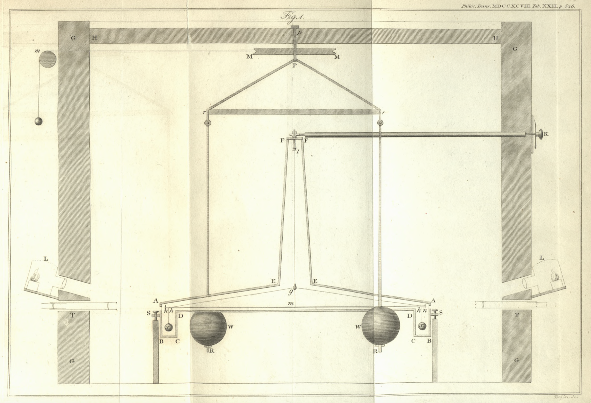

Deneyin önemli parçaları
Notlar
- Buradaki resimleri Cavendish'in original makalesinden aldım.
- Sarkaç kolu hangi ağaçtan yapılmalı?
- Fildişi ölçek (15). Cavendish şematikte sadece sarkaç koluna asılı ölçeği (vernier) göstermiş. Bu ölçekle ince ölçümleri yapıyor. Bir de kasaya takılı ve her bir derecesi 1/20 inch olan bir cetvel var, bu şematikte görülmüyor.
- Kasanın cam penceresi (15). Cetveli ve ölçeği okumak için Cavendish kasaya bir pencere acıp cam ile kapatmış. Bu aşağıda (15)'te görülüyor.
- Parçaların ölçüleri burada.
- Parçalar ile ilgili detaylar burada.
Sarkaç ve içinde bulunduğu binanın kesiti

Şekil 1: Cavendish deneyi kesiti
Parçalar
| No. | İsmi | Boyut | Materyel | Resmi |
|---|---|---|---|---|
| 01 | Sarkaç Kolu (hh) | (2 m) | Ahşap (çam) |  |
| 02 | Büyük gülle (W) | ~150 kg | Kurşun |  |
| 03 | Küçük gülle (x) | 504 gr | Kurşun |  |
| 04 | Maun kasa (ABCDDCBAEFFE) | Ahşap (Maun) |  |
|
| 05 | Sarkaç teli (gl) | Tel |  |
|
| 06 | Topların asılı olduğu tel | İnce tel |  |
|
| 07 | Kolu güçlendiren tel (hgh) | İnce tel |  |
|
| 08 | Kasayı tutan 4 vida (S) | Metal | |
|
| 09 | Ağırlıkları taşıyan bakır çubuklar (RrPrR) | Bakır |  |
|
| 10 | Ağırlıkların asılı olduğu tahta çubuk (rr) | Ahşap |  |
|
| 11 | Ağırlıkları taşıyan metal parça (Pp) | Metal |  |
|
| 12 | Metal takoz (p) | Metal | |
|
| 13 | Makara (MM) | Metal | |
|
| 14 | Makaraya bağlı ip (Mm) | İp |  |
|
| 15 | Fildişi ölçek (n) | Fildişi |  |
|
| 16 | Teleskop (T) | -- |  |
|
| 17 | Lamba (L) | -- | |
|
| 18 | Tahta çubuk (FK) | Ahşap |  |
|
| 19 | Sarkaç telini sabitleyen pirinç klipler (g ve l) | Pirinç | |
|
| 20 | Sonsuz vida (kolun kalibresi için) | Çelik |  |
|
| 21 | Sarkacın içinde bulunduğu oda (Maket görüntüsü) | Tuğla? |  |